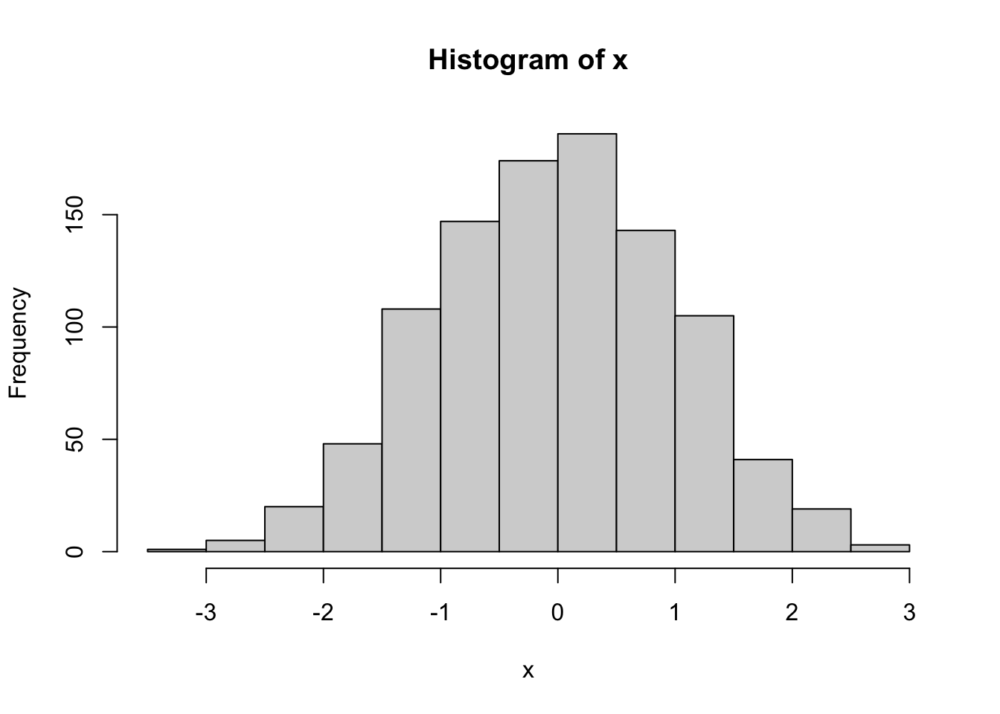
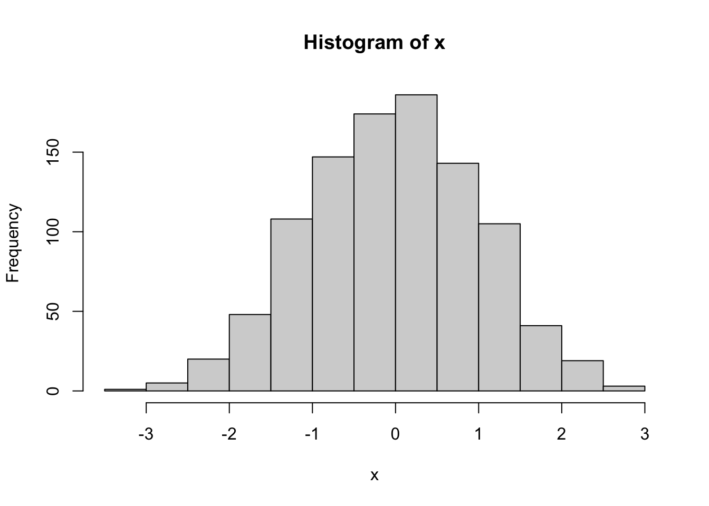
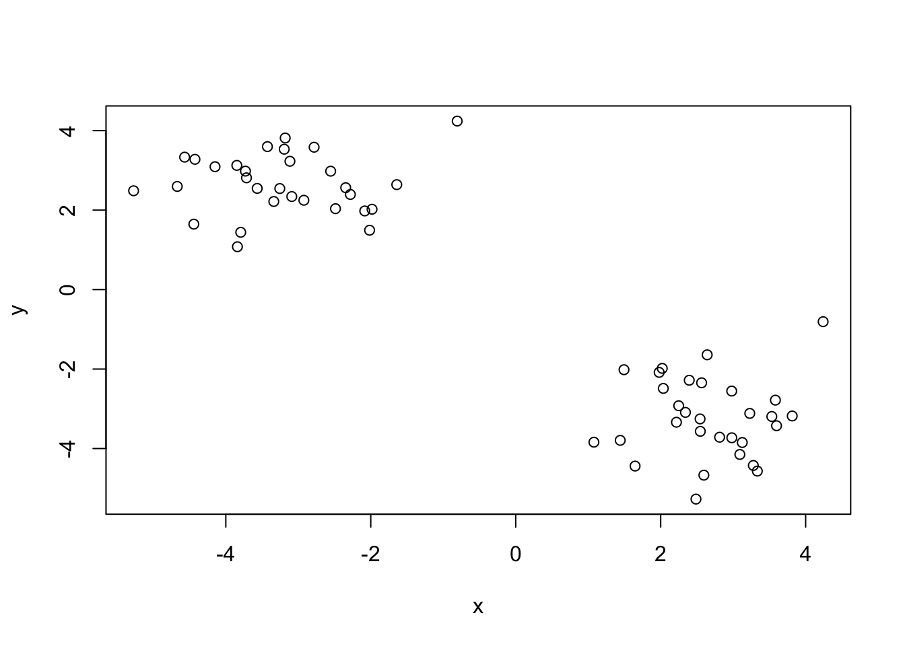
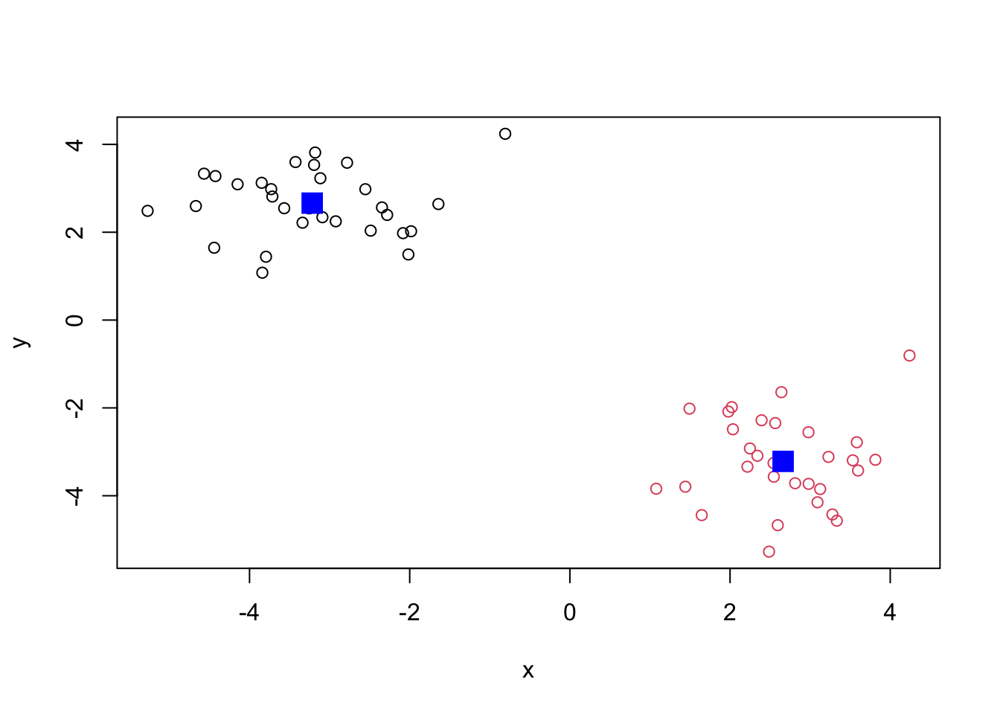
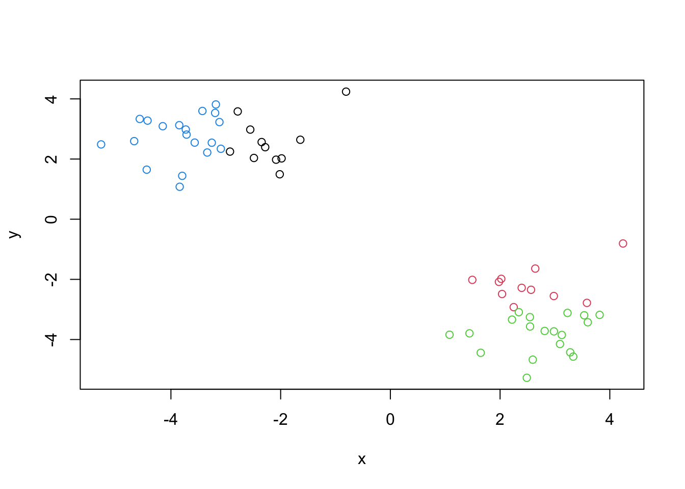
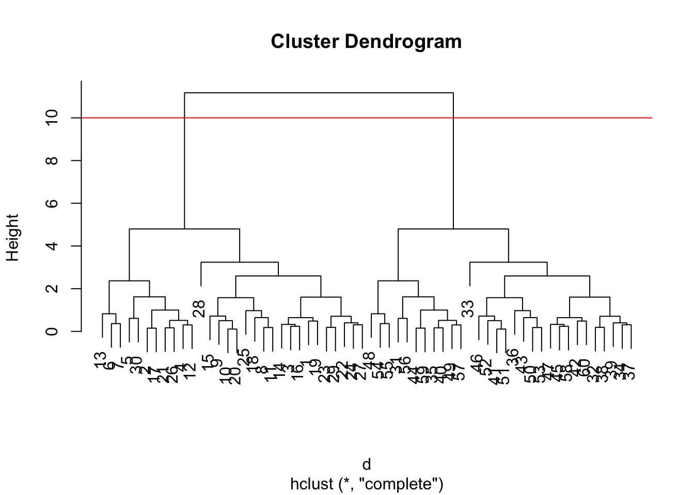
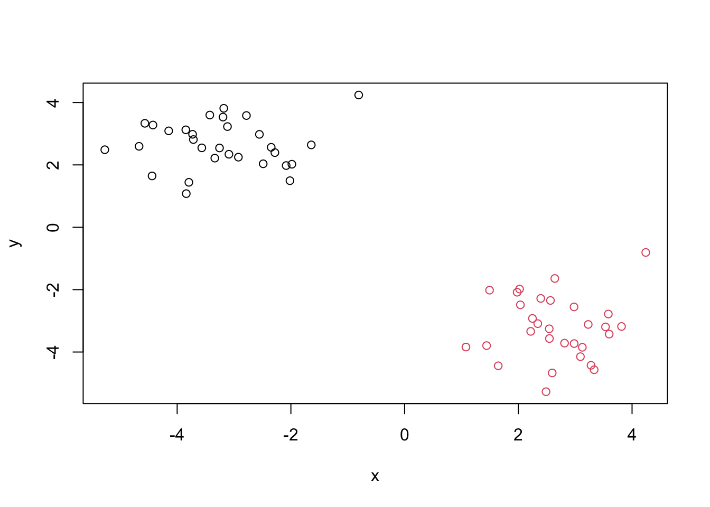
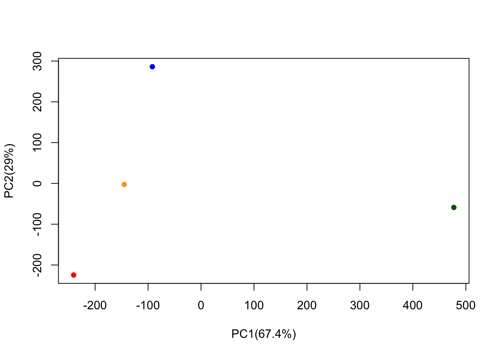

x=rnorm(1000)
hist(x)
The broad goal here is to find groupings in your input data.
First, make some data to cluster.
x=rnorm(1000)
hist(x)
MAke a vector of length 60 with 30 points centered at -3 and 30 points centered at 3.
tmp=c(rnorm(30, mean = -3), rnorm(30, mean = 3))
tmp [1] -2.7820633 -4.4259525 -3.1940158 -4.1490107 -5.2725049 -3.7942635
[7] -3.8401543 -2.3461667 -2.4869287 -2.0831545 -2.2815246 -3.8481784
[13] -4.4413457 -3.1806455 -2.0166440 -3.4258503 -4.5682855 -2.5537463
[19] -3.1155554 -1.9826974 -3.7149254 -3.3380049 -3.0898968 -3.5669314
[25] -1.6414530 -3.7291413 -3.2552741 -0.8074343 -2.9231957 -4.6699958
[31] 2.5957107 2.2481824 4.2409845 2.5432883 2.9812761 2.6414348
[37] 2.5466675 2.3415805 2.2172551 2.8127283 2.0217595 3.2289538
[43] 2.9795822 3.3333827 3.5982764 1.4937596 3.8147567 1.6467433
[49] 3.1255174 2.3938950 1.9789091 2.0360515 2.5644484 1.0785324
[55] 1.4418334 2.4867607 3.0919849 3.5330930 3.2782692 3.5828274I will now make a small x and y data set with 2 groups of points.
x= cbind(x=tmp, y=rev(tmp))
plot(x)
k=kmeans(x,centers=2)
kK-means clustering with 2 clusters of sizes 30, 30
Cluster means:
x y
1 -3.217498 2.662615
2 2.662615 -3.217498
Clustering vector:
[1] 1 1 1 1 1 1 1 1 1 1 1 1 1 1 1 1 1 1 1 1 1 1 1 1 1 1 1 1 1 1 2 2 2 2 2 2 2 2
[39] 2 2 2 2 2 2 2 2 2 2 2 2 2 2 2 2 2 2 2 2 2 2
Within cluster sum of squares by cluster:
[1] 45.61098 45.61098
(between_SS / total_SS = 91.9 %)
Available components:
[1] "cluster" "centers" "totss" "withinss" "tot.withinss"
[6] "betweenss" "size" "iter" "ifault" Question: from your result object
khow many point are in each cluster?
k$size[1] 30 30Question: What “component” of your result object details the cluster membership?
k$cluster [1] 1 1 1 1 1 1 1 1 1 1 1 1 1 1 1 1 1 1 1 1 1 1 1 1 1 1 1 1 1 1 2 2 2 2 2 2 2 2
[39] 2 2 2 2 2 2 2 2 2 2 2 2 2 2 2 2 2 2 2 2 2 2Question: what about cluster center?
k$centers x y
1 -3.217498 2.662615
2 2.662615 -3.217498Plot clusters
plot(x, col=k$cluster)
points(k$centers, col="blue", pch=15,cex=2)
We can cluster into 4 groups
k4=kmeans(x,centers=4)
k4K-means clustering with 4 clusters of sizes 11, 11, 19, 19
Cluster means:
x y
1 -2.173183 2.561985
2 2.561985 -2.173183
3 2.720874 -3.822102
4 -3.822102 2.720874
Clustering vector:
[1] 1 4 4 4 4 4 4 1 1 1 1 4 4 4 1 4 4 1 4 1 4 4 4 4 1 4 4 1 1 4 3 2 2 3 3 2 3 3
[39] 3 3 2 3 2 3 3 2 3 3 3 2 2 2 2 3 3 3 3 3 3 2
Within cluster sum of squares by cluster:
[1] 9.653204 9.653204 16.839986 16.839986
(between_SS / total_SS = 95.3 %)
Available components:
[1] "cluster" "centers" "totss" "withinss" "tot.withinss"
[6] "betweenss" "size" "iter" "ifault" plot(x, col=k4$cluster)
A big limitation of kmeans is that it does what you ask even if the clusters are silly.
The main base R function for Hierarchical clustering is hclust. unlike kmeans, you can not just pass it your data as an input. You need to calculate a distance matrix.
d=dist(x)
hc=hclust(d)
hc
Call:
hclust(d = d)
Cluster method : complete
Distance : euclidean
Number of objects: 60 Use plot()
plot(hc)
abline(h=10, col="red")
To make the “cut” and get our cluster membership vector we can use the cutree() function. Make a plot of our data colored by hclust results.
groups=cutree(hc, h=10)
groups [1] 1 1 1 1 1 1 1 1 1 1 1 1 1 1 1 1 1 1 1 1 1 1 1 1 1 1 1 1 1 1 2 2 2 2 2 2 2 2
[39] 2 2 2 2 2 2 2 2 2 2 2 2 2 2 2 2 2 2 2 2 2 2plot(x, col=groups)
Here we will do Principal Component Analysis (PCA) on some food data from the UK.
url <- "https://tinyurl.com/UK-foods"
x <- read.csv(url, row.names = 1)
x England Wales Scotland N.Ireland
Cheese 105 103 103 66
Carcass_meat 245 227 242 267
Other_meat 685 803 750 586
Fish 147 160 122 93
Fats_and_oils 193 235 184 209
Sugars 156 175 147 139
Fresh_potatoes 720 874 566 1033
Fresh_Veg 253 265 171 143
Other_Veg 488 570 418 355
Processed_potatoes 198 203 220 187
Processed_Veg 360 365 337 334
Fresh_fruit 1102 1137 957 674
Cereals 1472 1582 1462 1494
Beverages 57 73 53 47
Soft_drinks 1374 1256 1572 1506
Alcoholic_drinks 375 475 458 135
Confectionery 54 64 62 41#dont do this
#rownames(x)=x[,1]
#x=x[,-1]Q1. How many rows and columns are in your new data frame named x? What R functions could you use to answer this questions?
nrow(x)[1] 17ncol(x)[1] 417 rows and 4 columns
Q2. Which approach to solving the ‘row-names problem’ mentioned above do you prefer and why? Is one approach more robust than another under certain circumstances?
It is more effective to use the row.names=1 since it will not end up removing columns of data if run multiple times.
Q3: Changing what optional argument in the above barplot() function results in the following plot?
barplot(as.matrix(x), beside=T, col=rainbow(nrow(x)))
barplot(as.matrix(x), beside=F, col=rainbow(nrow(x)))
pairs(x, col=rainbow(10), pch=16)
The main “base” R function for PCA is called prcomp().
pca=prcomp(t(x))
summary(pca)Importance of components:
PC1 PC2 PC3 PC4
Standard deviation 324.1502 212.7478 73.87622 2.921e-14
Proportion of Variance 0.6744 0.2905 0.03503 0.000e+00
Cumulative Proportion 0.6744 0.9650 1.00000 1.000e+00How much variance is captured in 2 PCs. 96.5%
To make our main “PC score plot” or PC1 vs PC2 plot”, “PC plot”, or ” ordination plot”.
attributes(pca)$names
[1] "sdev" "rotation" "center" "scale" "x"
$class
[1] "prcomp"We are after the pca$x result component to make our main PCA plot.
pca$x PC1 PC2 PC3 PC4
England -144.99315 -2.532999 105.768945 -9.152022e-15
Wales -240.52915 -224.646925 -56.475555 5.560040e-13
Scotland -91.86934 286.081786 -44.415495 -6.638419e-13
N.Ireland 477.39164 -58.901862 -4.877895 1.329771e-13mycols=c("orange", "red", "blue", "darkgreen")
plot(pca$x[,1], pca$x[,2], col=mycols, pch=16, xlab="PC1(67.4%)", ylab="PC2(29%)")
Another important result from PCA is how the original variables (in this case foods) contribute to the PCs. This is contained in the pca$rotation object- people often call this the “loadings” or “contributions” to the PCs.
pca$rotation PC1 PC2 PC3 PC4
Cheese -0.056955380 0.016012850 0.02394295 -0.409382587
Carcass_meat 0.047927628 0.013915823 0.06367111 0.729481922
Other_meat -0.258916658 -0.015331138 -0.55384854 0.331001134
Fish -0.084414983 -0.050754947 0.03906481 0.022375878
Fats_and_oils -0.005193623 -0.095388656 -0.12522257 0.034512161
Sugars -0.037620983 -0.043021699 -0.03605745 0.024943337
Fresh_potatoes 0.401402060 -0.715017078 -0.20668248 0.021396007
Fresh_Veg -0.151849942 -0.144900268 0.21382237 0.001606882
Other_Veg -0.243593729 -0.225450923 -0.05332841 0.031153231
Processed_potatoes -0.026886233 0.042850761 -0.07364902 -0.017379680
Processed_Veg -0.036488269 -0.045451802 0.05289191 0.021250980
Fresh_fruit -0.632640898 -0.177740743 0.40012865 0.227657348
Cereals -0.047702858 -0.212599678 -0.35884921 0.100043319
Beverages -0.026187756 -0.030560542 -0.04135860 -0.018382072
Soft_drinks 0.232244140 0.555124311 -0.16942648 0.222319484
Alcoholic_drinks -0.463968168 0.113536523 -0.49858320 -0.273126013
Confectionery -0.029650201 0.005949921 -0.05232164 0.001890737We can make a plot along PC1
library(ggplot2)
contrib= as.data.frame(pca$rotation)
ggplot(contrib)+ aes(PC1, rownames(contrib))+geom_col()